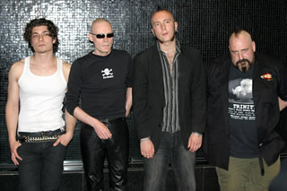
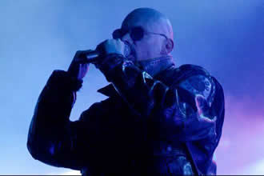

Entrevista
da banda à imprensa brasileira - Maio de 2006
São
dezesseis anos desde a primeira e única passagem até
o momento pelo Brasil. O que vocês esperam do show (Via
Funchal)?
Andrew: Não me recordo que passou
tanto tempo assim. Sinceramente, não consigo ter noção
do porquê demorar 16 anos pra tocarmos no Brasil, não
consigo lembrar nada sobre o show de 16 anos atrás. Mas
espero que o show seja muito bom, pra mim e para o público.
O álbum
First & Last & Always foi o que mais sucesso
fez no Brasil. Os outros também, mas esse contém
vários sucessos. Nos últimos set lists da banda
apenas a faixa título foi incluída e muitos clássicos
ficaram de fora. O público brasileiro pode esperar por
músicas como More e Walk Away neste
show?
Andrew: (ironicamente) Não.
Essa tour
será gravada para lançamento em DVD?
Andrew: (ironicamente) Não.
Serão
executadas músicas inéditas?
Andrew: Sim, devemos tocar entre 6 e 8
músicas inéditas, incluindo a faixa Still.
Há
quanto tempo esta formação tem tocado junto?
Andrew: São cinco meses, mas este
período tem sido praticamente todo na estrada tocando,
por isso já estamos bastante entrosados.
Dentre vários
comentários sobre os shows na Europa e EUA, muitos citaram
a ausência de um baixista. Faz falta realmente para banda
ou vocês preferem pré-gravar o instrumento como
no caso da bateria?
Andrew: Não entendi porque o baterista
não está aqui ainda... (risos). Quando uma música
necessita do baixo, um dos guitarristas toca o instrumento porque
não consistem apenas em meros guitarristas, eles podem
tocar ambos instrumentos. Não temos apenas um baixista
em específico. Acho que quatro músicas necessitam
de baixo, mas várias músicas são compostas
pela máquina, para máquina e ficam melhor com
a máquina.
Há
informações que músicas da banda estão
sendo tocadas ao vivo em diferentes versões quase heavy
metal. Gostaria de saber se isso corresponde a verdade.
Andrew: O Sisters Of Mercy sempre foi um
pouco uma banda de metal, e se o Sisters hoje em dia tende mais
pra esse lado está tudo OK.
Ben: Muitos falam que Sisters executa
heavy metal, mas na verdade heavy metal é um som muito
mais pesado e o Sisters faz um som muito mais leve...
Andrew: Algumas de nossas bandas favoritas
são de metal, como Motörhead e Deftones, mas não
gosto de todo metal como a banda Gore, por exemplo. Nada contra
eles...
Gostaria que
fosse feito um paralelo entre a banda nos 90 e a formação
atual.
Andrew: Essa formação é
muito mais jovem e faz de mim muito mais jovem, e com mais energia
pra tocar. Essa é a tour mais longa já feita e
se fosse realizada com a outra formação, provavelmente
todos já teriam morrido.
Sobre o material
novo, a banda toda participa do processo de composição?
Vocês devem lançar esse material em breve?
Andrew: A música que estamos fazendo
agora com essa line up deve sair antes do que as gravadas com
a antiga formação, por problemas internos envolvendo
o nome Sisters Of Mercy.
Faz muito tempo que a banda não
lança um álbum. O que uma gravadora "majeure"
deve fazer para conseguir com que o Sisters Of Mercy grave novamente?
Andrew: Teríamos que achar uma
gravadora que fosse tão ambiciosa quanto a banda. A Warner
por exemplo, oferece downloads em seu website oficial à
U$ 1 por música e teriam oferecido a U$ 0,01 pelo download
de cada música do Sisters. Várias bandas já
pensam nisso, sobre o controle que as gravadoras tem feito sobre
elas. Muitas bandas preferem ficar famosa a terem sucesso. O
Sisters não precisa disso no estágio que alcançamos.
Foi noticiado
que o Sisters Of Mercy e o The Mission não tem
bom relacionamento. Gostaria de saber se isso é verdade
ou é apenas lenda?
Andrew: Isso é só história.
First
& Last & Always?
Andrew: O First não foi
bem produzido, o que prejudicou um pouco a interpretação
sobre a sua sonoridade. Este álbum é irônico,
porém o público baseia sua vida numa interpretação
errada sobre esse trabalho. Na época em que gravamos
esse trabalho usávamos camisas havaianas, mas em um certo
show que fizemos em Manchester do nada trajamos roupas negras,
incluindo vestido longo, e até hoje todos consideram
aquele como o visual definitivo da banda, algo que não
consigo entender.
A banda Shaaman
gravou um cover para a música More do Sisters,
você já ouviu essa cover? O que acharam dela?
Andrew: Nunca ouvi, não conheço
a banda. Você é um integrante do Shaaman?
Repórter: Nesse momento
eu não gostaria de ser um...
Várias
bandas fazem covers de metal na linha gótica de músicas
do Sisters. O que acha dessas bandas? Vocês gostam dessas
versões?
Andrew: Conhecemos a cover do Paradise
Lost, banda com a qual já dividimos o palco. Soubemos
sobre a versão do Cradle Of Filth, fui até
convidado pra participar da versão (para faixa No
Time To Cry, lembra um repórter), mas acabou não
acontecendo. Várias bandas que coverizam Sisters gravam
músicas antigas, eu gostaria de vê-las gravando
covers das músicas mais novas.
Li numa entrevista
antiga onde o Andrew falava que a Internet era algo irrelevante
para a música. Eu queria saber como ele vê a relação
entre música e Internet hoje em dia.
Andrew:
Entrevistas também são irrelevantes para música.
Apenas não gostaria de fazer entrevistas em dias de show.
Vocês
são interessados em outras formas de expressão
artística? Acham isso fundamental? A ausência de
interesse é que tem tornado a pop music de péssima
qualidade?
Andrew: Os músicos devem ser interessados
principalmente por política. Acho que não tenho
capacidade pra escrever um romance ainda, e que não sou
um bom músico, mas vocês tem feito retornarmos
a música de tempos em tempos. Obrigado por terem vindo,
pois me fazem continuar a tocar... Não pretendo chegar
logo no fim dos meus dias.
No website
da banda é traçada uma linha evolutiva (onde os
jornalistas são colocados como a merda). Mas a pergunta
seria sobre quem estaria no topo desta linha evolutiva?
Andrew: No topo estaria à diva (?!).
Com relação aos jornalistas em nossa carreira
encontramos alguns muito ruins... os jornalistas brasileiros
estão um pouco mais acima nessa linha.
Foi citado
que todo músico deveria ter um pensamento político.
Gostaria de saber o que você acha da postura do Bono (Vox,
líder do U2), se você concorda ou acha
que isso tudo é puro marketing?
Andrew: Embora não concorde com
o Bono em várias coisas, acho legal que ele esteja engajado.
Embora não concorde, por exemplo, com bandas nazistas,
acho legal que eles tenham sua visão política
e demonstrem isso.
Você
acha que o caminho para as bandas é saírem das
gravadoras majeures e apenas firmarem contratos de distribuição
com as mesmas?
Andrew: É o melhor caminho para
as bandas, mas acontece que a mídia demonstra uma aversão
às bandas que estão fora das majeures. Isso dá
uma maior liberdade criativa.
Muitos fãs
se vestem e pensam influenciados pela banda. O que vocês
acham sobre esse fato?
Andrew: Conheço o público
mais gótico que se espelha na banda e não vejo
mal nenhum nisso, mas o legal é que o público
do Sisters é diferente, não é totalmente
gótico. A banda está aberta para donas de casa,
motoqueiros, drag queens e por aí afora, não necessariamente
apenas os góticos.
Simon Denbigh: Achava que no Brasil todo
mundo andava de biquíni na rua, mas vejo que a coisa
é diferente.
Extraída
de http://metalrevolution.net